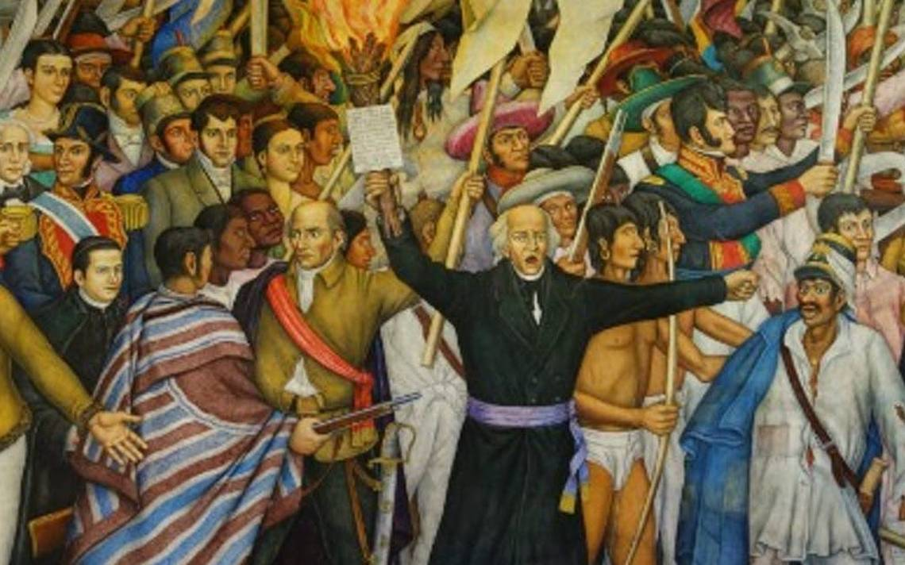
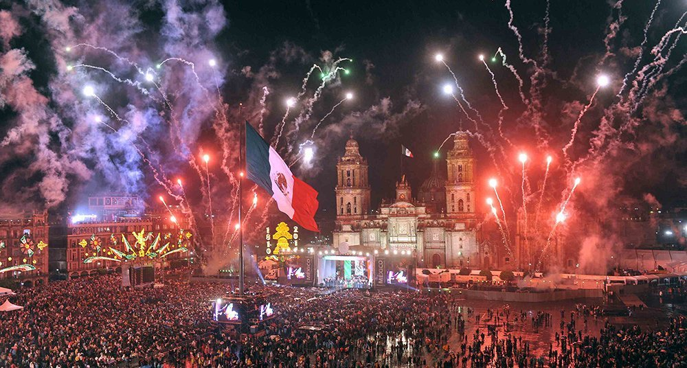

¡16 DE SEPTIEMBRE, FIESTA MEXICANA!
Cada 15 de septiembre por la noche se realiza la conmemoracion del grito de Dolores, por el cual el cura Miguel Hidalgo convocaba a tomar las armas en contra del dominio espanol
Sin duda, el Día de la Independencia de México es una de las celebraciones más esperadas por los ciudadanos de ese país. Desde los primeros días de septiembre, los colores de la bandera mexicana, (verde, blanco y rojo) comienzan aparecer en las fachadas de casas, oficinas y edificios públicos con diferentes elementos decorativos.
El Día de la Independencia de México es, probablemente, la celebración más importante de ese país. Comienza la noche del Grito, el 15 de septiembre, y concluye al día siguiente. En el marco de esta conmemoración histórica, en todo el país hay un despliegue de tradiciones y costumbres que merecen la pena ser destacadas.
¡Viva México!
Todos los años se conmemora ese llamado a la libertad y el punto culminante de esta celebración llega la noche del 15 de septiembre, cuando la gente se reúne en las principales plazas públicas para dar “el Grito”.
En la capital mexicana, desde el balcón del Palacio Nacional, el presidente porta la bandera mexicana y lanza vivas a los hombres y mujeres que participaron en la Independencia, seguido por los gritos de los miles de asistentes que llenan el Zócalo . El acto oficial culmina con un espectáculo de fuegos artificiales, pero para muchos, ¡tan solo es el comienzo de la fiesta!
La noche más mexicana
Las familias mexicanas suelen reunirse para celebrar la Independencia y deleitan sus paladares con diferentes platos típicos. Entre ellos,el pozole: un caldo preparado con maíz y carne de puerco y tostadas de diferentes guisados, como la pata de cerdo. Por supuesto, el tequila no puede faltar entre las bebidas que se consumen esa noche, así como las aguas frescas de frutas. Entre los postres destacan los buñuelos bañados con jarabe de piloncillo.
"UN POCO DE HISTORIA"
El periodo de nuestra historia conocido como la Guerra de Independencia empieza (estrictamente hablando) la madrugada del 16 de septiembre de 1810, cuando el padre Miguel Hidalgo da el llamado “Grito de Dolores” y termina el 27 de septiembre de 1821 (11 años después) con la entrada triunfal del Ejército Trigarante, encabezado por Agustín de Iturbide y Vicente Guerrero, a una jubilosa Ciudad de México. El objetivo principal de este movimiento (armado y social) era liberar a nuestro territorio del yugo español y que, en cada rincón de la Colonia se olvidase por completo el concepto de virreinato.